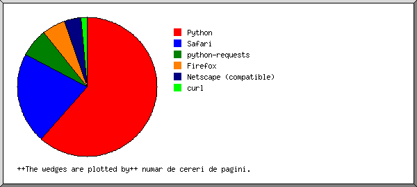
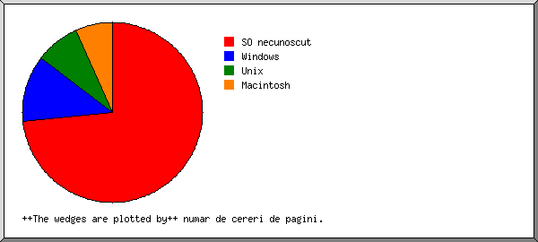

Statistica pentru pariazainteligent.ro
Statistica pentru pariazainteligent.ro
Program pornit la 3-Oct-2025 15:00.
Analiza ceruta de la 1-Oct-2025 20:26 la 3-Oct-2025 14:42 (1+76 zile).
Statistica pentru pariazainteligent.roProgram pornit la 3-Oct-2025 15:00.
Analiza ceruta de la 1-Oct-2025 20:26 la 3-Oct-2025 14:42 (1+76 zile).
(Vezi:: Inceput | Sumar General | Raport Lunar | Sumar Zilnic | Sumar Orar | Raport Domeniu | Raport Organizatii | Raport Erori Referinte | Raport Referinte la Sit-uri | Raport Browser | Sumar Browser | Raport Sisteme de Operare | Raport Cod Status | Raport Marimi Fisiere | Raport pe Tipuri de Fisiere | Raport Directoare | Raport Cereri)
Cereri satisfacute: 144
Media cererilor satisfacute zilnic: 81
Creri de pagina satisfacute: 75
Media cererilor de pagini satisfacute zilnic: 42
Cereri esuatee: 3
Fisiere distincte cerute: 37
Servere distincte servite: 48
Date transferate: 4+22 ++megabytes++
Media transferurilor zilnice: 2+40 ++megabytes++
(Vezi:: Inceput | Sumar General | Raport Lunar | Sumar Zilnic | Sumar Orar | Raport Domeniu | Raport Organizatii | Raport Erori Referinte | Raport Referinte la Sit-uri | Raport Browser | Sumar Browser | Raport Sisteme de Operare | Raport Cod Status | Raport Marimi Fisiere | Raport pe Tipuri de Fisiere | Raport Directoare | Raport Cereri)
Fiecare unitate ( ) reprezinta 2 cereri de pagini parti de.
) reprezinta 2 cereri de pagini parti de.
| luna | #cer. | #pagini | |
|---|---|---|---|
| Oct-2025 | 144 | 75 |    |
Luna de virf: Oct-2025 (75 cereri de pagini).
(Vezi:: Inceput | Sumar General | Raport Lunar | Sumar Zilnic | Sumar Orar | Raport Domeniu | Raport Organizatii | Raport Erori Referinte | Raport Referinte la Sit-uri | Raport Browser | Sumar Browser | Raport Sisteme de Operare | Raport Cod Status | Raport Marimi Fisiere | Raport pe Tipuri de Fisiere | Raport Directoare | Raport Cereri)
Fiecare unitate () reprezinta 2 cereri de pagini parti de.
| zi | #cer. | #pagini | |
|---|---|---|---|
| ++Dum++ | 0 | 0 | |
| ++Lun++ | 0 | 0 | |
| ++Mar++ | 0 | 0 | |
| ++Mie++ | 35 | 7 | |
| ++Joi++ | 20 | 20 |  |
| ++Vin++ | 89 | 48 |  |
| ++Sam++ | 0 | 0 |
(Vezi:: Inceput | Sumar General | Raport Lunar | Sumar Zilnic | Sumar Orar | Raport Domeniu | Raport Organizatii | Raport Erori Referinte | Raport Referinte la Sit-uri | Raport Browser | Sumar Browser | Raport Sisteme de Operare | Raport Cod Status | Raport Marimi Fisiere | Raport pe Tipuri de Fisiere | Raport Directoare | Raport Cereri)
Fiecare unitate () reprezinta 1 cerere pentru o pagina.
| ora | #cer. | #pagini | |
|---|---|---|---|
| ++ 0++ | 2 | 2 | |
| ++ 1++ | 2 | 2 | |
| ++ 2++ | 2 | 2 | |
| ++ 3++ | 2 | 2 | |
| ++ 4++ | 2 | 2 | |
| ++ 5++ | 24 | 9 | |
| ++ 6++ | 28 | 6 | |
| ++ 7++ | 8 | 6 | |
| ++ 8++ | 4 | 3 | |
| ++ 9++ | 4 | 3 | |
| ++10++ | 2 | 2 | |
| ++11++ | 2 | 2 | |
| ++12++ | 2 | 2 | |
| ++13++ | 2 | 2 | |
| ++14++ | 3 | 3 | |
| ++15++ | 0 | 0 | |
| ++16++ | 0 | 0 | |
| ++17++ | 2 | 2 | |
| ++18++ | 2 | 2 | |
| ++19++ | 2 | 2 | |
| ++20++ | 40 | 12 | |
| ++21++ | 5 | 5 | |
| ++22++ | 2 | 2 | |
| ++23++ | 2 | 2 | |
(Vezi:: Inceput | Sumar General | Raport Lunar | Sumar Zilnic | Sumar Orar | Raport Domeniu | Raport Organizatii | Raport Erori Referinte | Raport Referinte la Sit-uri | Raport Browser | Sumar Browser | Raport Sisteme de Operare | Raport Cod Status | Raport Marimi Fisiere | Raport pe Tipuri de Fisiere | Raport Directoare | Raport Cereri)
Lista domenii, sortate dupa trafic.
| #cer. | %bytes | domeniu |
|---|---|---|
| 144 | 100% | [adrese numerice nerezolvate] |
(Vezi:: Inceput | Sumar General | Raport Lunar | Sumar Zilnic | Sumar Orar | Raport Domeniu | Raport Organizatii | Raport Erori Referinte | Raport Referinte la Sit-uri | Raport Browser | Sumar Browser | Raport Sisteme de Operare | Raport Cod Status | Raport Marimi Fisiere | Raport pe Tipuri de Fisiere | Raport Directoare | Raport Cereri)
Lista primelor 20 organizatii dupa numarul de cereri, sortate dupa numarul de cereri.
| #cer. | %bytes | organizatie |
|---|---|---|
| 55 | 11+76% | 85 |
| 22 | 14+66% | 51 |
| 17 | 27+46% | 17 |
| 9 | 0+20% | 205.169 |
| 6 | 14+61% | 34 |
| 5 | 14+34% | 35 |
| 5 | 0+11% | 57 |
| 4 | 1+06% | 54 |
| 3 | 13+54% | 44 |
| 2 | 0+02% | 209.242 |
| 2 | 0+27% | 138.197 |
| 2 | 0+53% | 93 |
| 2 | 0+53% | 104 |
| 1 | 0+27% | 198.98 |
| 1 | 13 | |
| 1 | 23 | |
| 1 | 16 | |
| 1 | 0+03% | 94 |
| 1 | 0+02% | 89 |
| 1 | 3 | |
| 3 | 0+58% | [ne-listat: 3 organizatii] |
(Vezi:: Inceput | Sumar General | Raport Lunar | Sumar Zilnic | Sumar Orar | Raport Domeniu | Raport Organizatii | Raport Erori Referinte | Raport Referinte la Sit-uri | Raport Browser | Sumar Browser | Raport Sisteme de Operare | Raport Cod Status | Raport Marimi Fisiere | Raport pe Tipuri de Fisiere | Raport Directoare | Raport Cereri)
Lista URL-uri referinta, sortate dupa numar de cereri nesatisfacute.
| #cer. | URL |
|---|---|
| 1 | http://pariazainteligent.ro/ |
(Vezi:: Inceput | Sumar General | Raport Lunar | Sumar Zilnic | Sumar Orar | Raport Domeniu | Raport Organizatii | Raport Erori Referinte | Raport Referinte la Sit-uri | Raport Browser | Sumar Browser | Raport Sisteme de Operare | Raport Cod Status | Raport Marimi Fisiere | Raport pe Tipuri de Fisiere | Raport Directoare | Raport Cereri)
Lista referinte la sit-uri, sortate dupa numarul de cereri.
| #cer. | site |
|---|---|
| 38 | http://pariazainteligent.ro/ |
| 8 | http://www.pariazainteligent.ro/ |
(Vezi:: Inceput | Sumar General | Raport Lunar | Sumar Zilnic | Sumar Orar | Raport Domeniu | Raport Organizatii | Raport Erori Referinte | Raport Referinte la Sit-uri | Raport Browser | Sumar Browser | Raport Sisteme de Operare | Raport Cod Status | Raport Marimi Fisiere | Raport pe Tipuri de Fisiere | Raport Directoare | Raport Cereri)

Lista browsere cu cel putin 1 cerere pentru o pagina, sortate dupa numar de cereri de pagini.
| #cer. | #pagini | browser |
|---|---|---|
| 46 | 46 | Python/3.11 aiohttp/3.9.2 |
| 5 | 5 | python-requests/2.21.0 |
| 3 | 3 | Mozilla/5.0 (compatible; CMS-Checker/1.0; +https://example.com) |
| 4 | 2 | Mozilla/5.0 (X11; Linux x86_64) AppleWebKit/537.36 (KHTML, like Gecko) HeadlessChrome/68.0.3440.106 Safari/537.36 |
| 2 | 2 | Mozilla/5.0 (Windows NT 10.0; Win64; x64) AppleWebKit/537.36 (KHTML, like Gecko) Chrome/70.0.3538.102 Safari/537.36 Edge/18.19582 |
| 2 | 2 | Mozilla/5.0 (Linux; Android 8.0.0; SM-G965U Build/R16NW) AppleWebKit/537.36 (KHTML, like Gecko) Chrome/63.0.3239.111 Mobile Safari/537.36 |
| 17 | 2 | Mozilla/5.0 (Macintosh; Intel Mac OS X 10_15_7) AppleWebKit/605.1.15 (KHTML, like Gecko) Version/17.4 Safari/605.1.15 (Applebot/0.1; +http://www.apple.com/go/applebot) |
| 21 | 1 | Mozilla/5.0 (X11; Linux x86_64) AppleWebKit/537.36 (KHTML, like Gecko) Chrome/132.0.0.0 Safari/537.3 |
| 3 | 1 | Mozilla/5.0 (Windows NT 6.1; Win64; x64) AppleWebKit/537.36 (KHTML, like Gecko) Chrome/83.0.4103.61 Safari/537.36 |
| 2 | 1 | Mozilla/5.0 (X11; Linux x86_64; rv:139.0) Gecko/20100101 Firefox/139.0 |
| 1 | 1 | Mozilla/5.0 (Windows NT 6.1; WOW64; rv:47.0) Gecko/20100101 Firefox/47.0 |
| 1 | 1 | Mozilla/5.0 (Macintosh; Intel Mac OS X 10_15_7) AppleWebKit/537.36 (KHTML, like Gecko) Chrome/113.0.0.0 Safari/537.36 |
| 5 | 1 | Mozilla/5.0 (iPhone; CPU iPhone OS 16_6_1 like Mac OS X) AppleWebKit/605.1.15 (KHTML, like Gecko) Version/16.5 Mobile/15E148 Safari/604.1 |
| 1 | 1 | Mozilla/5.0 (iPhone; CPU iPhone OS 14_4 like Mac OS X) AppleWebKit/605.1.15 (KHTML, like Gecko) Version/15.4 Mobile/15E148 Safari/604.1 |
| 1 | 1 | curl/7.81.0 |
| 5 | 1 | Mozilla/5.0 (Windows NT 10.0; Win64; x64) AppleWebKit/537.36 (KHTML, like Gecko) Chrome/79.0.3945.79 Safari/537.36 |
| 1 | 1 | Mozilla/5.0 (Windows NT 10.0) AppleWebKit/537.36 (KHTML, like Gecko) Chrome/106.0.0.0 Safari/537.36 |
| 2 | 1 | Mozilla/5.0 (Windows NT 10.0; Win64; x64; rv:123.0) Gecko/20100101 Firefox/123 |
| 5 | 1 | Mozilla/5.0 (Windows NT 6.1; WOW64) AppleWebKit/537.36 (KHTML, like Gecko) Chrome/47.0.2526.111 Safari/537.36 |
| 2 | 1 | Mozilla/5.0 (Windows NT 10.0; Win64; x64; rv:143.0) Gecko/20100101 Firefox/143.0 |
| 15 | 0 | [ne-listat: 3 browsere] |
(Vezi:: Inceput | Sumar General | Raport Lunar | Sumar Zilnic | Sumar Orar | Raport Domeniu | Raport Organizatii | Raport Erori Referinte | Raport Referinte la Sit-uri | Raport Browser | Sumar Browser | Raport Sisteme de Operare | Raport Cod Status | Raport Marimi Fisiere | Raport pe Tipuri de Fisiere | Raport Directoare | Raport Cereri)

Lista browsere cu cel putin 1 cerere pentru o pagina, sortate dupa numar de cereri de pagini.
| nr. | #cer. | #pagini | browser |
|---|---|---|---|
| 1 | 46 | 46 | Python |
| 46 | 46 | Python/3 | |
| 2 | 67 | 16 | Safari |
| 44 | 12 | Safari/537 | |
| 6 | 2 | Safari/604 | |
| 17 | 2 | Safari/605 | |
| 3 | 5 | 5 | python-requests |
| 5 | 5 | python-requests/2 | |
| 4 | 7 | 4 | Firefox |
| 2 | 1 | Firefox/143 | |
| 2 | 1 | Firefox/139 | |
| 2 | 1 | Firefox/123 | |
| 1 | 1 | Firefox/47 | |
| 5 | 8 | 3 | Netscape (compatible) |
| 6 | 1 | 1 | curl |
| 1 | 1 | curl/7 | |
| 10 | 0 | [ne-listat: 2 browsere] |
(Vezi:: Inceput | Sumar General | Raport Lunar | Sumar Zilnic | Sumar Orar | Raport Domeniu | Raport Organizatii | Raport Erori Referinte | Raport Referinte la Sit-uri | Raport Browser | Sumar Browser | Raport Sisteme de Operare | Raport Cod Status | Raport Marimi Fisiere | Raport pe Tipuri de Fisiere | Raport Directoare | Raport Cereri)

Lista sisteme de operare, sortate dupa numar de cereri de pagini.
| nr. | #cer. | #pagini | SO |
|---|---|---|---|
| 1 | 69 | 55 | SO necunoscut |
| 2 | 22 | 9 | Windows |
| 12 | 6 | Windows NT | |
| 10 | 3 | Windows necunoscut | |
| 3 | 29 | 6 | Unix |
| 29 | 6 | Linux | |
| 4 | 24 | 5 | Macintosh |
(Vezi:: Inceput | Sumar General | Raport Lunar | Sumar Zilnic | Sumar Orar | Raport Domeniu | Raport Organizatii | Raport Erori Referinte | Raport Referinte la Sit-uri | Raport Browser | Sumar Browser | Raport Sisteme de Operare | Raport Cod Status | Raport Marimi Fisiere | Raport pe Tipuri de Fisiere | Raport Directoare | Raport Cereri)

Lista coduri status, sortate numeric.
| #cer. | cod status |
|---|---|
| 144 | 200 OK |
| 2 | 403 Access interzis |
| 1 | 404 Documentul nu a fost gasit |
(Vezi:: Inceput | Sumar General | Raport Lunar | Sumar Zilnic | Sumar Orar | Raport Domeniu | Raport Organizatii | Raport Erori Referinte | Raport Referinte la Sit-uri | Raport Browser | Sumar Browser | Raport Sisteme de Operare | Raport Cod Status | Raport Marimi Fisiere | Raport pe Tipuri de Fisiere | Raport Directoare | Raport Cereri)

| marime | #cer. | %bytes |
|---|---|---|
| 0 | 4 | |
| 1B- 10B | 0 | |
| 11B- 100B | 14 | 0+02% |
| 101B- 1kB | 39 | 0+39% |
| 1kB- 10kB | 7 | 0+29% |
| 10kB-100kB | 74 | 19+64% |
| 100kB- 1MB | 6 | 79+66% |
(Vezi:: Inceput | Sumar General | Raport Lunar | Sumar Zilnic | Sumar Orar | Raport Domeniu | Raport Organizatii | Raport Erori Referinte | Raport Referinte la Sit-uri | Raport Browser | Sumar Browser | Raport Sisteme de Operare | Raport Cod Status | Raport Marimi Fisiere | Raport pe Tipuri de Fisiere | Raport Directoare | Raport Cereri)

Lista extensii cu cel putin 0+1% trafic, sortate dupa trafic.
| #cer. | %bytes | extensie |
|---|---|---|
| 14 | 79+90% | .js [JavaScript code] |
| 75 | 17+94% | [directoare] |
| 5 | 1+30% | .txt [Plain text] |
| 1 | 0+25% | .json |
| 1 | 0+25% | .ico |
| 25 | 0+22% | .php [PHP] |
| 23 | 0+14% | [ne-listat: 3 extensii] |
(Vezi:: Inceput | Sumar General | Raport Lunar | Sumar Zilnic | Sumar Orar | Raport Domeniu | Raport Organizatii | Raport Erori Referinte | Raport Referinte la Sit-uri | Raport Browser | Sumar Browser | Raport Sisteme de Operare | Raport Cod Status | Raport Marimi Fisiere | Raport pe Tipuri de Fisiere | Raport Directoare | Raport Cereri)
Lista directoare cu cel putin 0+01% trafic, sortate dupa trafic.
| #cer. | %bytes | director |
|---|---|---|
| 9 | 79+66% | /assets/ |
| 82 | 19+75% | [director de baza] |
| 14 | 0+35% | /_autoindex/ |
| 25 | 0+22% | /api/ |
| 14 | 0+02% | /.well-known/ |
(Vezi:: Inceput | Sumar General | Raport Lunar | Sumar Zilnic | Sumar Orar | Raport Domeniu | Raport Organizatii | Raport Erori Referinte | Raport Referinte la Sit-uri | Raport Browser | Sumar Browser | Raport Sisteme de Operare | Raport Cod Status | Raport Marimi Fisiere | Raport pe Tipuri de Fisiere | Raport Directoare | Raport Cereri)

Lista fisiere cu cel putin 20 cereri, sortate dupa numarul de cereri.
| #cer. | %bytes | ultima ora | fisier |
|---|---|---|---|
| 75 | 17+94% | 3-Oct-25 14:42 | / |
| 25 | 0+22% | 3-Oct-25 6:26 | /api/data.php |
| 44 | 81+84% | 3-Oct-25 9:52 | [ne-listat: 21 fisiere] |